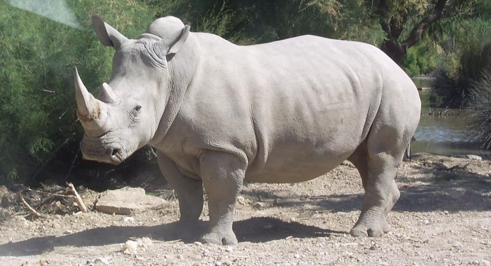

VENADO
JIRAFA
CANGURO
OSO
RINOCERONTE
VENADO
Los cérvidos (Cervidae) son una familia de mamíferos rumiantes que incluye los ciervos o venados. Su tamaño es variable, siendo el alce el mayor (hasta 450 kg), y el venadito o pudú del norte, el menor, con unos 8 o 10 kg.
Habitan en varias zonas del mundo, por lo que se los puede encontrar en Europa, Asia, América, norte de África y algunas zonas árticas. Fue introducido por el hombre en Nueva Zelanda y Australia.La mayoría de los ciervos posee una glándula cerca del ojo que contiene feromonas, sustancias que les sirven para marcar su territorio. Los machos utilizan esta sustancia cuando se encuentran molestos por la presencia de otros machos. La mayoría de las especies de ciervos viven en grupos familiares alrededor de una hembra (otras especies taxonómicamente cercanas, como los ciervos almizcleros, familia Moschidae, viven en pareja).
CARACTERISTICAS
- Se alimentan de hojas, ramas y brotes de plantas. El período de gestación de las hembras varía entre ciento sesenta días a diez meses según la especie; paren una o dos crías al año que reciben el nombre de cervatos, cervatillos o gabatos.
- Tienen patas delgadas, pezuñas hendidas y largos cuellos con cabezas largas y finas.
- Son esbeltos herbívoros.
- Tienen el pelo liso o moteado en la mayoría de las especies, salvo algunas cuyo pelaje es poco preciso como ocurre con los renos, y son los únicos mamíferos a los que les crecen astas o cuernas nuevas cada año, formadas por hueso muerto.
- Las astas empiezan a formarse a partir de dos protuberancias del cráneo. Al crecer, las recubre un terciopelo llamado «borra» que posee gran cantidad de vasos sanguíneos para alimentar el hueso que crece bajo ellas.
MENU
JIRAFA

La jirafa es una especie de mamíferos cuadrúpedos de origen africano, reconocibles por su pelaje moteado y su largo cuello, capaz de alcanzar los 2 metros entre el torso y la cabeza. De nombre científico Giraffa camelopardalis, se trata de un animal muy icónico de la fauna africana y además del animal más alto que se conoce en todo el planeta, ya que puede alcanzar entre 5 y 6 metros de altura total en su etapa adulta. Las jirafas son animales hermosos y llamativos, que fueron ya representados en las tumbas egipcias de la antigüedad. Su preservación, de acuerdo a la Unión Internacional para la Conservación de la Naturaleza (UICN), constituye un motivo menor de preocupación, ya que siguen siendo abundantes las jirafas en vida libre o en cautiverio. Aún así, es alarmante la disminución de hasta un 40% en la población total de la especie entre 1895 y 2015 .
CARACTERISTICAS
- Es un animal cuadrúpedo y de gran tamaño, cuyo peso varía entre los 600 y los 1500 kg, y cuya altura puede alcanzar los 6 metros.
- Las jirafas son grandes corredoras, capaces de alcanzar velocidades del orden de los 50 kmph en distancias cortas.
- Poseen una lengua prensil que extendida puede alcanzar los 50 cm de largo, y es de color negro-púrpura.
- Poseen también una cola de un metro de largo, que culmina en un mechón de pelo largo y oscuro.
- Conforme envejecen, los machos de la especie desarrollan pequeñas protuberancias craneales gracias a depósitos de calcio.
MENU
CANGURO

Podemos encontrar canguros en distintos países como Nueva Guinea, Tasmania y Australia. El hábitat natural del canguro son las zonas áridas como estepas y sabanas, aunque también se pueden encontrar en bosques secos y praderas.
Por otra parte, debemos tener en cuenta que su distribución depende de la especie de la que estemos hablando. Así pues, mientras el canguro gris es capaz de vivir en muchos hábitats y ecosistemas el canguro rojo únicamente se encuentra en zonas áridas.Este canguro habita en las zonas más áridas del contiene australiano, evitando precisamente aquellas más húmedas y fértiles en las que es posible encontrar al canguro gris. De esta forma, su distribución comprende matorrales, pastizales y desiertos, estando acostumbrados, por tanto, a vivir bajo temperaturas y condiciones climáticas extremas.
CARACTERISTICAS
- Pueden llegar a medir más de 2 metros de altura y a pesar alrededor de 85 kilos.
- Poseen dos fuertes patas traseras que utilizan para saltar y desplazarse, además de una cola que les permite mantener el equilibrio en su movimiento y les da un gran impulso en los saltos.
- Es el marsupio o bolsa que tienen en la zona del vientre, en la que albergan a la cría durante los primeros meses de su vida hasta que estos se desarrollan y alcanzan su madurez.
- El embarazo dura entre 28 y 36 días y suele haber una sola cría pero puede haber hasta dos.
- Cabe destacar que suelen vivir en grupos grandes, por lo que se consideran sociales con los de su propia especie, mostrando generalmente un carácter tímido y asustadizo, de modo que tienden a huir ante cualquier sonido, aunque si se sienten amenazados pueden adoptar un carácter muy agresivo
MENU
OSO
Los osos o úrsidos (Ursidae) son una familia de mamíferos omnívoros.Son animales de gran tamaño, generalmente omnívoros, ya que, a pesar de su temible dentadura, comen frutos, raíces e insectos, además de carne. Con sus pesados cuerpos y sus poderosas mandíbulas, los osos se encuentran entre los mayores carnívoros que viven en la Tierra. Los osos han sido cazados desde tiempos prehistóricos por su carne y su piel; se han utilizado para ser hostigados y otras formas de entretenimiento, como hacerles bailar. Con su poderosa presencia física, juegan un papel destacado en las artes, la mitología y otros aspectos culturales de varias sociedades humanas. En los tiempos modernos, los osos se han visto presionados por la invasión de sus hábitats y el comercio ilegal de partes de osos, incluido el mercado asiático de osos biliares.
CARACTERISTICAS
- Las patas son cortas y poderosas, con cinco dedos provistos de uñas fuertes y recurvadas garras.
- Se sabe que un oso negro de apenas 54 kg (120 libras), puede voltear una roca de entre 140 y 147 kg (310 y 325 libras) con una pata delantera, fácilmente.
- Se alimentan de pequeños vertebrados, invertebrados, huevos, frutos y otros vegetales.
- El pelaje es largo y espeso, y generalmente de un solo color, a menudo marrón, negro o blanco.
- Pueden desplazarse cortas distancias erguidos sobre las patas traseras.
MENU
RINOCERONTE

Los rinocerótidos (Rhinocerotidae, del griego ρινός (rinós), 'nariz' y κερος (keros), 'cuerno'), conocidos con el nombre de rinocerontes, son una familia de mamíferos placentarios del suborden ceratomorfos perteneciente al orden de los perisodáctilos. Actualmente existen cinco especies: el rinoceronte blanco y el rinoceronte negro en África y el rinoceronte de Java, el rinoceronte de la India y el rinoceronte de Sumatra en Asia. Según la clasificación de estado de conservación confeccionada por la Unión Internacional para la Conservación de la Naturaleza, las especies de rinocerontes de Java, Sumatra y negro se encuentran en «peligro crítico»; el de la India se considera «vulnerable» y el blanco «casi amenazado». Vive fundamentalmente en Namibia, Sudáfrica y Kenya.
CARACTERISTICAS
- Se alimentan por lo general de hojas, su capacidad de fermentar el alimento en el colon les permite sobrevivir consumiendo materia vegetal más leñosa, como raíces y ramas, de ser necesario.
- Los rinocerontes tienen un agudo sentido del olfato y un oído sensible, pero muy mala vista.
- La longitud de la cabeza y el cuerpo es de 240 a 315 cm en el rinoceronte de Sumatra y de 335 a 420 cm en el rinoceronte blanco.
- Es el segundo animal terrestre más grande después del elefante.
- Las hembras del rinoceronte blanco y el indio empiezan sus ciclos sexuales alrededor de los cinco años de edad, y paren sus primeras crías entre los seis y los ocho años. Las hembras del rinoceronte negro, que son más pequeñas, son fértiles un año antes.
MENU
Pagina Principal